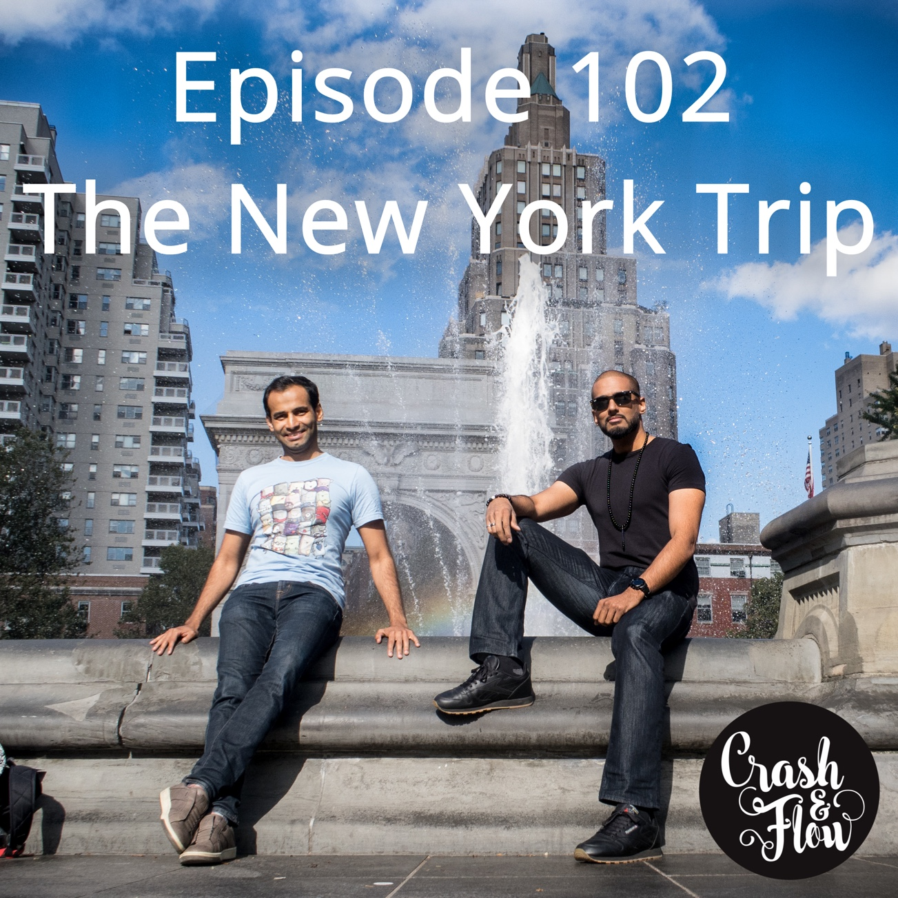
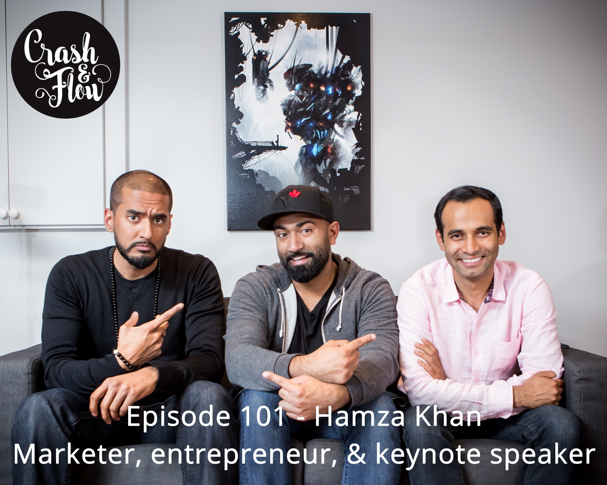
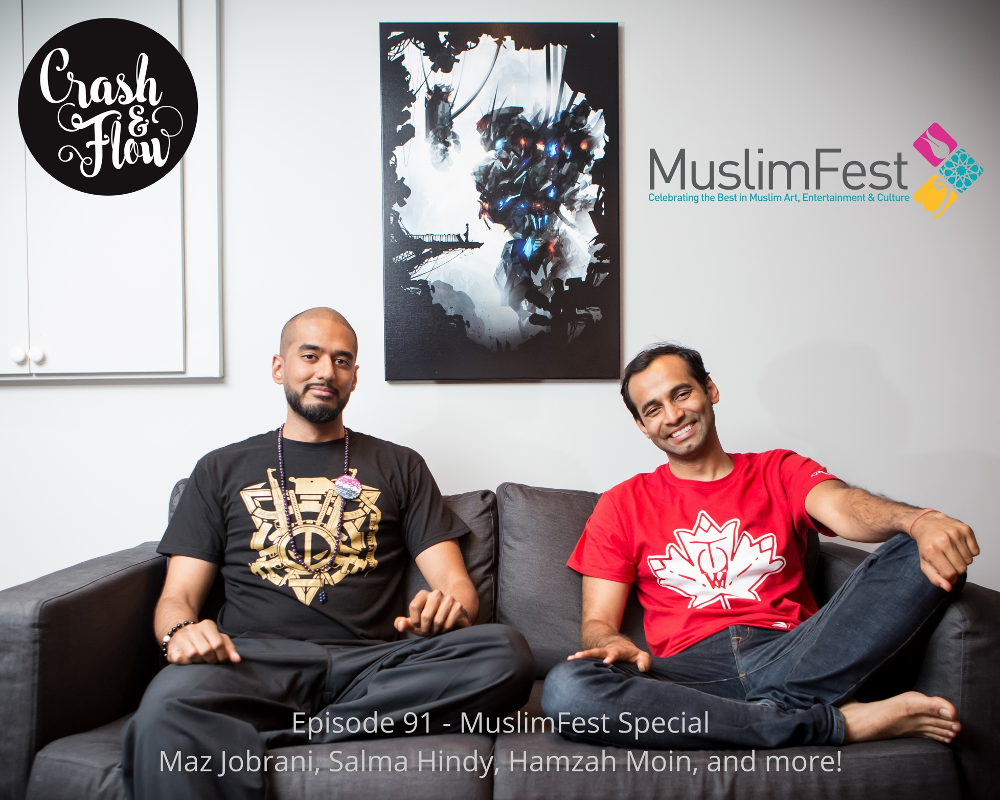
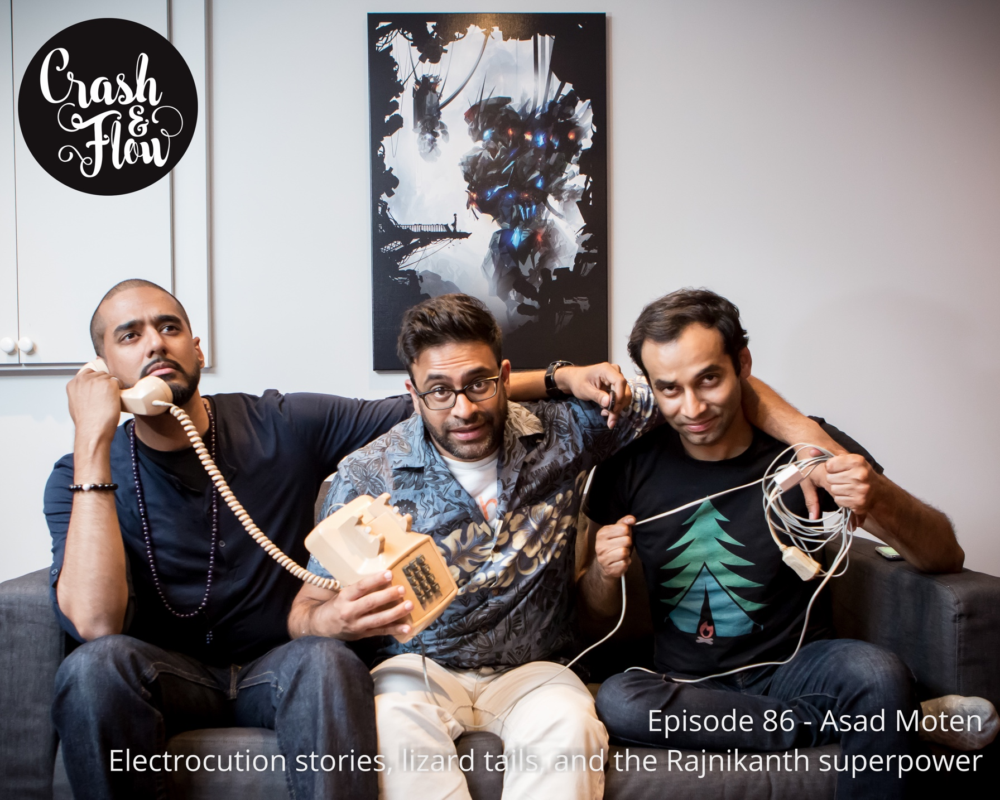
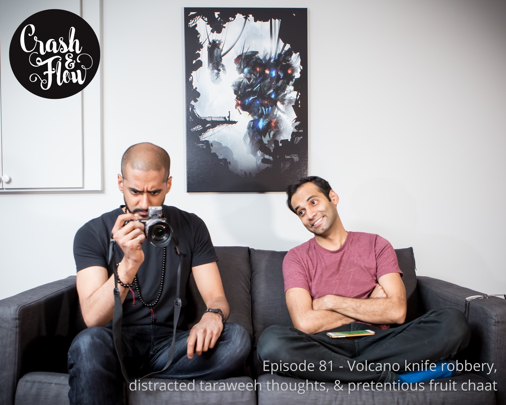
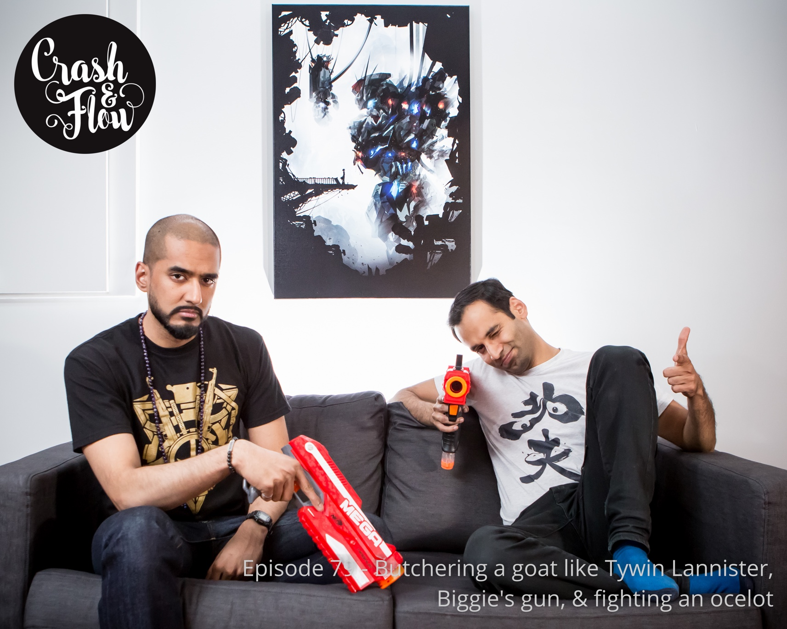
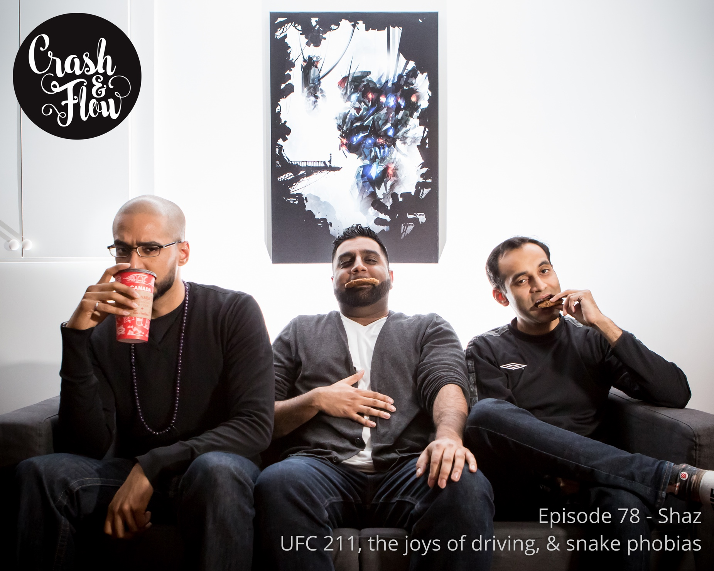
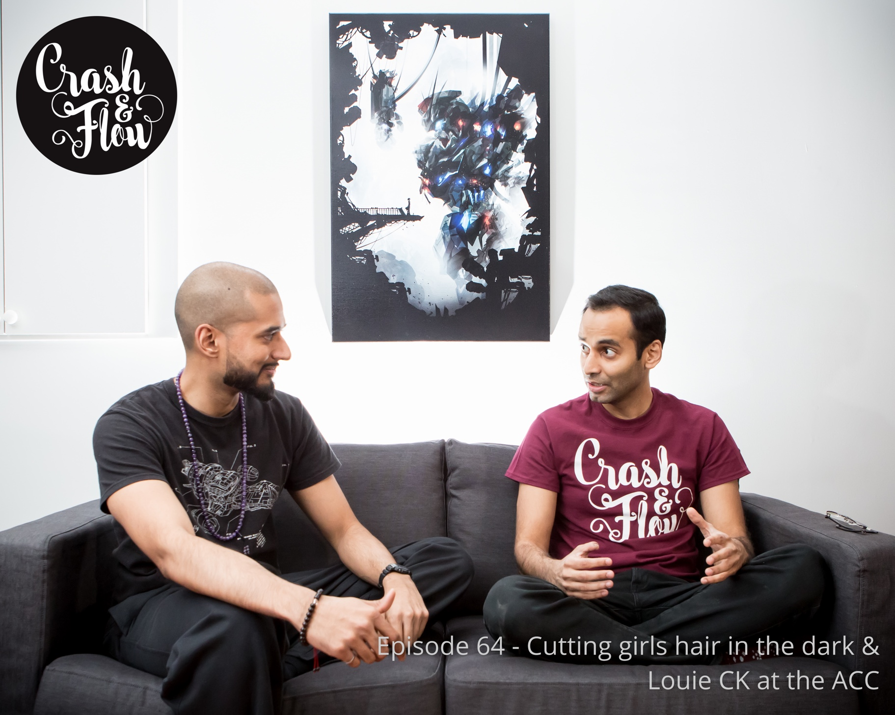
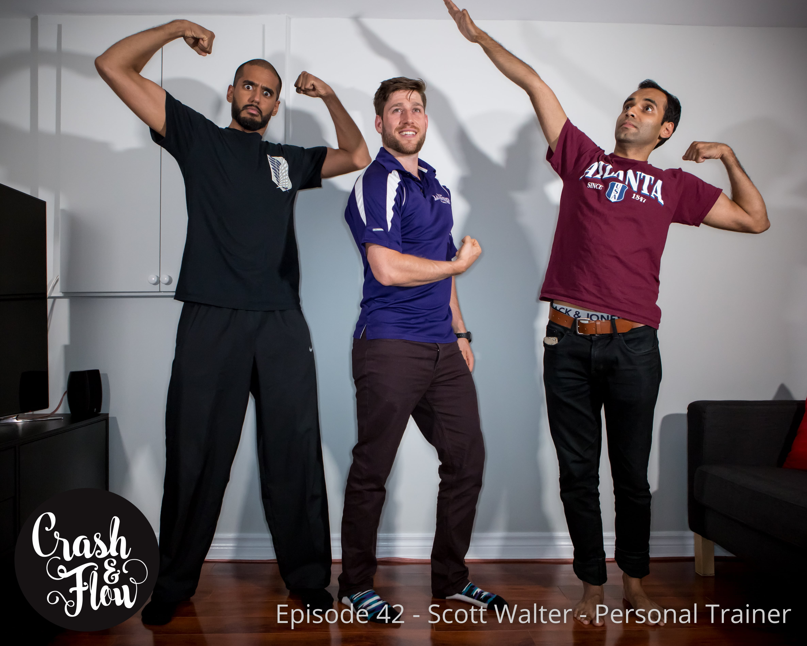

About
A conversational podcast hosted by Yasin Dusoruth and Syed Raza.
We talk about anything and everything that interests us and we often have guests as well! Come hang with us! New episodes every Sunday night!
Latest episodes
Episode 110 - Food poisoning and still mad at M. Night Shyamalan Aired on December 24, 2017
They guys chat about what level of anxiety will cause them to stress eat, Tom Hardy's upcoming movie Venom, and why they're still super angry at M. Night Shyamalan. Yasin talks about his recent bout of food poisoning and Syed preps for his first dinner at a Michelin starred restaurant.
Episode 109 - Matchbox - Dr Bano Murtuja & Faiza Khan Aired on December 17, 2017
Co-directors of Matchbox, Dr Bano Murtuja and Faiza Khan chat with Yasin and Syed about their personalized matchmaking company and why offline dating is a better alternative to some of the services currently available. They explain how it works, the various services they provide, and what you get if you decide to go with the $10,000 package.
Check them out here: www.yoursearchendshere.com
Episode 108 - Aiman Ghori - Attack on Titan Aired on December 10, 2017
Crash & Flow's first anime episode!
Aiman Ghori chats with Yasin and Syed about Season 2 of Attack on Titan. They nerd out about the possible origins of the titans, who the heck is the beast titan, and why is Captain Levi's ankle rehabilitation taking so long?!
[SEASON 2 SPOILERS!!!]
Episode 107 - Eric Vaz - Thor: Ragnarok Aired on December 03, 2017
C&F regular Eric Vaz sits down with Yasin and Syed to review Marvel's newest installment Thor: Ragnarok! They also discuss the current whereabouts of the Infinity Stones and predictions for the upcoming Black Panther movie!
[CAUTION: SPOILERS]
Episode 106 - Stranger Things & Cat vs Raccoon turf wars Aired on November 26, 2017
Yasin and Syed sit down for a classic Crash & Flow episode to chat about Stranger Things season 2. They discuss the problem with Eleven drawing power from hate, possible Alien 3 influences, and Steve Harrington, Babysitter Extraordinaire. They also get into biological warfare over a locked staircase and turf wars...
Episode 105 - Samera Munir - The perils of dating Aired on November 19, 2017
The funny and ever entertaining Samera chats with Yasin and Syed about her experiences in the dating world. They get into first date plans, funny (creepy) Minder bios, and sad after parties. This episode will have you laughing and cringing in equal measure...
Episode 104 - Sarmad Gilani - Reviving the Islamic Spirit convention Aired on November 12, 2017
Sarmad Gilani from the RIS team chats with Yasin and Syed about the annual Reviving the Islamic Spirit conference. They talk about what goes on behind the scenes, the conference's exponential growth over the years, and how to shepherd lost lecturers. They also discuss the impact the conference has had on them, and their beards.
Episode 103 - Fahad Tariq - CEO of Shift Aired on November 05, 2017
CEO and founder of Shift, Fahad Tariq chats with Yasin and Syed about how he and his team are starting an energy revolution by using tech to turn cow waste into free, clean (non-smelly) cooking gas for those who are in desperate need it. He explains how the process works, the various benefits to using Shift instead of current available methods, and his vision for the future.
Episode 102 - The New York Trip Aired on October 29, 2017
Here's another roaming podcast from Crash & Flow! In this episode Yasin and Syed record mini podcasts at the Washington Square Park, the Brooklyn Bridge, and the C&F studio. They talk about seeing Aziz Ansari at the Comedy Cellar, ordering cookies at 2am, and capturing an engagement in Central Park. Yasin gripes about getting randomly selected twice, and Syed shares the story of his confrontation with a New York rat. Be sure to also check out the video version of this episode as well as the Vlog on Youtube!
Episode 101 - Hamza Khan - Marketer, entrepreneur, & keynote speaker Aired on October 22, 2017
Award-winning marketer and accomplished entrepreneur Hamza Khan chats with Yasin and Syed about a lot of things you probably won't expect; like deconstructing Ja Rule's strengths and weakness, the differences between a stand up comic and a prop comic, and the various racial slurs they were called while growing up. They discuss Mr. Worldwide's original dreams, Transformer 5, and the design decisions of Greek sculptors. Yasin and Syed eventually pick Hamza's brain about morning rituals, how he structures his highly productive days and his new book the Burnout Gamble, which is available now on Amazon.com!
Episode 100 - Eric Vaz - The Michael Bay movie method & handcuffed to a bedpost Aired on October 15, 2017
The lovable and always entertaining Eric Vaz joins Yasin and Syed to talk about a whole lot of everything. They uncover how Michael Bay comes up with movie ideas, what to do if you are ever handcuffed to a bedpost, and why Megan Fox is better than Morpheus. Yasin rants about his deep rooted issues with Laurence Fishburne in the movie Predators and Eric introduces a new character he is working on.
Episode 99 - Amar Singh - Stand-up comic Aired on October 08, 2017
Stand-up comic Amar Singh chats with Yasin and Syed about his battle with his roommate's cat, the Toronto comedy scene, and how slam poetry eventually brought him to an open mic night at the Sin Bin. They also get into writing processes, if struggle is needed for good material, and the importance of asking before punching.
Episode 98 - Funny goats, misfit prisoners, & state shifting Aired on October 01, 2017
Yasin and Syed chat about questionable steaks, Chris Pine's undeniable charm, and devil goats. Syed talks about meeting the host of Cash Cab: Canada and Yasin explains what he learned from his recent NLP class on state shifting.
Later, they try to figure out how a brown accountant could survive in a maximum security prison.
Episode 97 - Jibreel and Bilal Moore from Mustaqeem Aired on September 24, 2017
Yasin and Syed chat with the talented Jibreel and Bilal Moore from the contemporary vocal music (nasheed) group: Mustaqueem!!! Jibreel and Bilal explain how they produce their unique sound and their overall creative process. The musical duo also get into their experiences making music videos, their inspiration, and their future vision for themselves.
Episode 96 - Locker room smells & asking cops random questions Aired on September 17, 2017
Yasin and Syed chat about the specific locker room smells of various sports, their upcoming trip to New York, and hyperbaric oxygen therapy. Yasin talks about the random questions he's asked cops recently and and Syed explains his dreams of being a bouncer...
Episode 95 - Asad Moten - Fear of dancing & the logistical issues of polygamy Aired on September 10, 2017
Yasin and Asad chat with Crash and Flow regular Asad Moten about challenging random people to a dance off, MC’ing a wedding in Sesame Street costumes, and the logistical nightmare that is polygamy. They also get into what it’s like to snort a Listerine breath strip and Yasin tells a story about an upset auntie at a birthday party. This is one silly podcast.
Episode 94 - Saba Rizvi - Art therapy, pain, & weed Aired on September 03, 2017
Yasin and Syed chat with the talented and inspiring Saba Rizvi about how an accident that resulted in brain injury and fibromyalgia inspired her journey to painting and meditative artwork. She also explains her artistic process and how marijuana has helped her manage her pain and increase her focus.
Episode 93 - Dragons, Johnny Depp’s money issues, and Baywatch Aired on August 27, 2017
Yasin and Syed talk about last week's Game of Thrones episode (spoilers), why Jon Jones is a horrible human being, and Johnny Depp's ridiculous spending habits. They also get into their most recent Netflix binges and the awesome Baywatch remake.
Episode 92 - Zohaib Naqvi Floyd Mayweather vs. Conor McGregor Primer Aired on August 20, 2017
The always entertaining Zobi from the Instant Replay Podcast joins Yasin and Syed to talk about the highly anticipated Floyd Mayweather vs Conor McGregor fight. They discuss the press tour, Conor's trash talk game, predictions, and possible fight strategies. They also chat about Amir Khan's recent Twitter meltdown, the dirty tactics of the McGregor camp, and future UFC cyborg fighters.
Episode 91 - MuslimFest Special ft. Maz Jobrani, Salma Hindy, Hamzah Moin, and more! Aired on August 13, 2017
This is Crash & Flow's first audio documentary!
Yasin and Syed took the Crash & Flow Podcast to MuslimFest to talk with vendors, performers, and award winners. They even got backstage access to chat with comedians Maz Jobrani and Salma Hindy, MC extraordinaire Hamzah Moin and Deputy Leader of the NDP Jagmeet Singh.
Episode 90 - Therapy, Linkin Park, & genetic capsules for relationships Aired on August 06, 2017
Yasin and Syed share their respective thoughts about their experiences in therapy and the benefits they've noticed along the way. They also get into the differences between Indian roti vs Trinidadian roti and the best place to get them in the city. Yasin pitches an idea on the best way to share your 23andMe results and Syed shares his deal breakers
Episode 89 - Game of Thrones, Thor Ragnarok, & smart octopuses Aired on July 30, 2017
Yasin and Syed chat about the first 2 episodes of Game of Thrones and the amazing Thor: Ragnarok announcement trailer. They discuss the difference between a million and a billion, why it might be a good idea to give away your pit bull before having a baby, and the life expectancy of a blue whale. Also, Syed insults Yasin's fish. Rude.
Episode 88 - Eric Vaz & Antoine Bridge - Spider Man Homecoming Debrief Aired on July 23, 2017
After a long hiatus, Eric Vaz is back! Also, Crash & Flow is happy to welcome Antoine Bridge to the nerd circle. Both Eric and Antoine help point out all the things that Yasin and Syed missed while watching Spider-Man Homecoming. They go through the many Easter eggs as well as filling in knowledge gaps. Yes, if you are Spider-Man fan, you need to see/listen to this episode. (Spoilers abound!!!)
Episode 87 - Marrying up, the brittle hands of Floyd, & the unstoppable Ben Affleck Aired on July 16, 2017

Yasin and Syed chat about their shared hate of rompers, learning to ride a bike, and why the sport of Polo is enjoyable for the horse. They get into the concept of marrying up vs marrying weird and they follow Ben Affleck's struggle out of his crater of failure up to his role as Batman. They also talk about Floyd Mayweather and Conor McGregor's awesome and entertaining press tour.
Episode 86 - Asad Moten Electrocution stories, lizard tails, and the Rajnikanth superpower Aired on July 09, 2017
The always entertaining Asad Moten is back for another episode. The guys talk about electrocution experiences, homeless appendages, and the mutant powers of Rajnikanth. They also get into house lizards, clown phobias, and recovering from animal attacks. See the theme? THERE ISN'T ONE!
Episode 85 - Whales used to be dogs & wasps are murderers!!! Aired on July 02, 2017
Yasin and Syed talk about popping pigeons, the right way to kill a lobster, and witnessing a fight between a catfish and a 2x4. They chat about The Rock's surprising movie career and why they must watch all Michael Bay movies. Later, Syed blows Yasin's mind about the origins of whales. Some say he's still reeling from the shock.
Episode 84 - EID SPECIAL!!! Aired on June 25, 2017
EID MUBARAK EVERYONE!
Yasin and Syed talk gifts for snot nosed kids and fond memories from past Eid celebrations. They chat about their favorite gifts, food, and random traditions picked up along the way. They end things with their resolutions and loud declarations...
Episode 83 - Vengeance bear killing, Halo life lessons, & a falcon guardian Aired on June 18, 2017
Yasin and Syed fight through sleepiness and a cold to chat about the life lessons Halo taught them, the true story of a grandmother hunting a bear for payback, and how a falcon eats pigeon. They also get into the Great Blackout of 2003 and how Yasin's grandfather fashioned weapons from car parts.
Episode 82 - Traumatic Saving Private Ryan dreams & a traditional 10 course Chinese Wedding Aired on June 11, 2017
Yasin and Syed talk about dreams. Syed shares his most recent vivid sleepwalking dream where he is forced to re-enact a scene from Saving Private Ryan and Yasin explains a dream where he lives a lifetime with a woman but can't remember her face when he wakes up. They discuss Kevin Hart being a gateway stand-up comedian, how to practice slaughtering livestock, and using belly flab as motivation. Yasin shares his first experience at a traditional 10 course Chinese Wedding and his first time eating sea cucumbers...
Episode 81 - Volcano knife robbery, distracted taraweeh thoughts, & pretentious fruit chaat Aired on June 04, 2017
Yasin and Syed chat about broken body parts, burp dispersal methods, and Syed's wife's high class fruit chaat. Yasin tells a true story of a volcano knife robbery and Syed explains what you should do at hypothetical kerfuffles during taraweeh (night prayer). Sometimes tossing a toddler and running might be the answer...
Episode 80 - Islamic Relief's event ft. Trevor Noah, hunger induced convos, & owning your suit Aired on May 28, 2017

Yasin and Syed chat about why male massage therapists are better, food, the deep feeling of happy you get from cooking over fire, food, and the recent Islamic Relief event that featured the very funny,Trevor Noah . They also get into falooda/alooda, food, importance of proper fitting clothes, and of course, food. It was the first day of Ramadan and these guys were hungry...
Episode 79 - Butchering a goat like Tywin Lannister, Biggie's gun, & fighting an ocelot Aired on May 21, 2017
Yasin and Syed chat about using the act of butchering a goat to enhance your monologues and arguments. Syed talks about his visit to the gun range and tries to convince Yasin that he would win a fight with an ocelot. They also get into the honeymoon phase of a relationship, wedding planning, and the wonder of eyebrows...
Episode 78 - Shaz - UFC 211, the joys of driving, & snake phobias Aired on May 14, 2017
Shaz joins Yasin and Syed to chat about simple pleasures, the joy of driving, and using newborns to overcome phobias. Before that, they break down the exciting UFC 211 card and make their predictions as well as mourn The Raptors.
Episode 77 - Escapist alien dreams, king Kendrick, & dumpster diving Aired on May 07, 2017

Yasin and Syed chat about Kendrick Lamar's newest album, what happens to homeless people when the Raptors win, and the art of bread making. Yasin talks about his reoccurring alien dreams where he escapes the mother-ship and Syed shares his odd amount of knowledge about wine.
Episode 76 - The best Olsen sibling, future funny parents, & the sister tactic Aired on Apr 30, 2017
Yasin and Syed talk about willful self-programming, Bob Saget's dirtiest jokes, and songs and movies they can no longer listen/watch. They also get into the importance of humor in their relationships, Louie CK's newest special, and stupid guidelines for corporate stand up gigs. A mixed bag of emotions...
Episode 75 - Gerrard street's best kulfi salesman Aired on Apr 23, 2017

Yasin and Syed discuss the effects of WD-40 on various bugs and how to trap mice. Syed talks about his new love of marinating and grilling meats while fighting off brown spiders. Yasin shares his experience meeting a 13 year old kulfi salesman in Toronto's Little India (Gerrard Street).
Episode 74 - Asad Moten - Riding scorpions & Bruce Lee's diet Aired on Apr 16, 2017
Asad joins Yasin and Syed once again to talk about a lot of nothing. They figure out:
- What animal they'd like to ride (scorpion? ants? wolf?)
- What Bruce Lee ate to make him awesome
- How many halal hot dogs one can eat during a leisurely stroll and
- How to avoid fights in a violent high school
It got real near the end...
Episode 73 - Shamil Creator of Salaam Love Aired on Apr 09, 2017

Yasin and Syed sit down with Shamil, one of the 2 creators of a matchmaking service called Salaam Love. Shamil points out the various pitfalls in the current popular methods of finding a partner. He then explains what makes Salaam Love different from other matchmaking services and breaks down the unique Salaam Love experience.
Episode 72 - Childish Simba, Dave Chappelle & cottage murder rooms Aired on Apr 02, 2017
Yasin and Syed chat about the new Dave Chappelle double special, Donald Glover's role as Simba in the upcoming Lion King remake, and the Wachowski's 10 million dollar bold move to pitch The Matrix to Warner executives. Syed talks about his recent trip and Yasin tells the story of when he caught a virus that made it difficult to walk.
Episode 71 - Eric Vaz Logan Debrief & Toronto Comicon Aired on Mar 26, 2017
Crash and Flow regular, Eric Vaz, breaks down the newest Wolverine movie, Logan, with Yasin and Syed. They get into the nerd level details of the film and Eric explains the differences between the movie and Old Man Logan (the comic book that the film is loosely based on). They also talk about the most recent Toronto ComiCon and of course.... The Rock. (Spoilers abound!!!)
Episode 70 - Asad Moten Pakistan's lawn war & the underside of flat earth Aired on Mar 19, 2017
Yasin and Syed chat with Asad Moten about his recent trip to Pakistan. They talk about lawn season, cricket, The Coke Studio, and goat waste disposal systems. Asad gets into the good, bad, and not so pretty sides of his homeland and then eventually asks one of his quintessential hypothetical questions. Yasin and Syed end the podcast trying to describe what would be at the edges and the other side of a flat earth. No, don't worry, they're not flat earth believers!
Episode 69 - Taste testing racoons & protecting your woman from Canada geese Aired on Mar 12, 2017
Yasin and Syed chat about bullies getting a taste of their own medicine, what to do when a deer gives you attitude, and the most recent UFC yawnfest. Syed tells the story of when he had to face off against one of the greatest evils found in The North... A Canadian goose.
Episode 68 - Sukaina & Akila Dada - A Bedtime Prayer for Peace Aired on Mar 05, 2017
The inspiring and driven, Sukaina and Akila Dada, chat with Yasin and Syed about their upcoming children's book entitled, "A Bedtime Prayer for Peace". They share what motivated them to write the book, as well as the various lessons that can be learned from both the story and the beautiful illustrations. You'll get to hear the story in it's entirety at the end of the episode, so stick around!
Episode 67 - Attack on Titan mustaches & mating shenanigans at the Jungle Cat World Park Aired on Feb 26, 2017
Yasin and Syed chat about season 1 of Attack on Titan, Georges St Pierre's historic return to the UFC, and the colours they see when they think happy thoughts. Syed gets SUPER HYPED talking about his visit at the Jungle Cat World Wildlife park where he saw various big cats during feeding time and a sexually inexperienced Lynx.
Episode 66 - Dr. Zainab Furqan Psychiatry Resident - University of Toronto Aired on Feb 19, 2017

Psychiatry resident, Dr. Zainab Furqan chats with Yasin and Syed about cross-cultural psychiatry, the positive effects of social connections on mental health, anxiety, and a whole lot more. Get ready to write notes and Google things! This episode is full of useful info!
Episode 65 - The perils of dating a Mauritian, Elon Musk, & racist astronauts Aired on Feb 12, 2017
Yasin and Syed create an all brown cast list for a Silicone Valley hostage movie, talk about why trailers are evil, and discuss M Night Shyamalan's potential chance at redemption as a director. Yasin explains how a friend's extreme positivity pushed him into wedding photography and Syed describes the difficulties Shagoofta will have dating a Mauritian.
Episode 64 - Cutting girls hair in the dark & Louie CK at the ACC Aired on Feb 5, 2017
Yasin and Syed chat about seeing the great Louie CK at the ACC, the upcoming John Wick sequel, Spielberg hit and miss movies, and knowing when it's time to get Shwifty. Yasin tells the story of the time he dabbled as a candlelight hair stylist and Syed explains why people are boycotting a Bollywood movie.
Episode 63 - Super Bowl primer & the Genghis Khan of the NFL Aired on January 29, 2017
Yasin and Syed sit with sports fanatics: Zobi and Shaz to get pumped up for Super Bowl 51. They get into the highlights of both the Patriots and the Falcons, discuss possible game day strategies, and predictions. They also discover who can be considered the Genghis Khan of the NFL. Everything you need to jump on the football band wagon, or at least fake it while you are hanging with your friends watching the game.
Episode 62 - Tamil Tiger altercation & racist Lord of the Rings Aired on January 22, 2017
Yasin tells the story about how he almost got jumped by a Tamil gang due to an accidental stare down and Syed offers a possible backstory of how Azog The Defiler got his nickname. They also share their thoughts on the struggle of maintaining discipline and how they keep things on track.
Episode 61 - Ode to Tilikum & friends that know how to use shovels Aired on January 15, 2017
Yasin and Syed chat about Tilikum, the legendary orca from the movie Blackfish and how his actions (murders) ensured the freedom of whales in the wild. Syed shares which dog he's thinking of getting and Yasin describes the exact moment he decided a diet was in order. They both go through their contact list to figure out which of their friends would help hide a body if needed...
Episode 60 - Salma Hindy - Hijabi stand up comedy Aired on January 8, 2017
The funny and multi-talented Salma Hindy chats with Yasin and Syed about her first time performing stand up just a few weeks ago. She explains her writing process as well her plans for 2017. They also get into how stand-up can be used to make connections with people that might have never interacted with a Muslim before and to share stories from a unique point of view. That, and much more awesome comedy talk.
Episode 59 - Zia Ali - Star Wars Rogue One review & completely wrong UFC 207 predictions Aired on January 1, 2017
Nerd and UFC fanatic Zia Ali hangs out with Yasin and Syed to review Star Wars Rogue One. They discuss the profound impact the late Carrie Fisher had on the popular Sci-Fi series and nerd culture as a whole. The guys then make their predictions for UFC 207 and get almost everything wrong. Zia gets upset that Yasin missed his chance to date UFC Ring Girl Arianny Celeste. It's an emotional episode...
Episode 58 - Undercover Christmas love & gangster carols Aired on December 25, 2016
Yasin and Syed talk about how they experienced Christmas as Muslims growing up in Canada/Texas. They stumble upon a magical hip hop Christmas album called A Colt 45 Christmas and break down the insightful lyrics. Near the end, they discuss predictions on where they think this season of the Walking Dead is headed.
Episode 57 - Human sacrifices, Genghis Khan, and a Westworld primer Aired on December 18, 2016
Yasin and Syed talk about scary Genghis Khan's facts, Aztec human sacrifices, and harems that include goats. They share their experience at the UFC 206 weigh-ins, seeing Joe Rogan live for the first time, and trolls bad mouthing fighters during the Q & A.. They also get into HBO's Westworld but don't worry, no spoilers!
Episode 56 - Conniving scumbag animals & how to survive a bear attack Aired on December 12, 2016
Yasin makes Syed squirm in his chair as he describes what happens in America's most violent wrestling death-match and also explains why he's excited for the Rock's upcoming movie... Baywatch. Then, they go through a list of the world's most conniving scumbag animals and a PSA on how to survive attacks from various types of bears. This episode will probably save your life.
Episode 55 - Arrival movie review & the enigma that is Kanye West Aired on December 5, 2016
Yasin and Syed share thoughts about this year's best alien movie: Arrival, Kanye's newest shenanigans, and the man that convinces Klansmen to leave the KKK through friendship and open conversation (Daryl Davis). They also discuss if they think with words or images and if they have inner monologues...
Episode 54 - Mohammed Sheikh Mind Coach / Life Coach Aired on November 27, 2016
Mind coach, Mohammed Sheikh chats with Yasin and Syed about emotional blocks that prevent us from being at the top of our game, how hypnosis is used in his coaching sessions to tap into the unconscious mind, and some history about NLP (Neuro-linguistic programming). He also gets into the difference between anxiety and phobias and explains steps behind "the 10 minute phobia cure". Get ready to write some notes and do some Googling! This episode is full of useful info!
Episode 53 - Bullies, the friend that made all the difference, and UFC 206 Aired on November 20, 2016
Yasin talks about less than awesome high school experiences, bullies, and the friend that helped him out when it mattered most. Syed shares his thoughts about his shifting view on life and how trying new things has lead him to a more fulfilled existence. Before all of this deep introspection, they talked about men punching other men in the face: UFC 206 and Conor McGregor's newest victory.
Episode 52 - Eric Vaz - Dr. Strange Debrief & Infinity Stone Refresher Aired on November 13, 2016
Crash & Flow regular and nerd guru Eric Vaz chat with Yasin and Syed about Marvel's newest movie Dr. Strange (SPOILERS). They go over the back story of the Ancient One and how the character differs between the comics and the movie (oh yes, deep dive nerd stuff) and later, they break down the status and locations of each Infinity Stone. This is all required knowledge people!
Episode 51 - Nas Pasha - Storyboard Artist & Animator Aired on November 7, 2016
Artist and animator Nas Pasha chats with Yasin and Syed about the tenacity required to finish a print he named "The Cursed Piece", manga vs anime, and the incredibly involved process behind traditional animation. Also, Nas shares a behind-the-scenes look at the awesome proof of concept: KAILU vs KAIJU and he reveals an excited upcoming project.
Episode 50 - Zia Ali - UFC deep dive and Khabib love Aired on October 29, 2016
Yasin and Syed hang with friend and fellow nerd Zia to discuss all things UFC. They talk about where they think the UFC is now headed with the new owners at the helm. They also get into the status of the current star power (Ronda Rousey, Conner McGregor), and predictions of the much anticipated, UFC 205. One of them declares their undying love for Khabib Nurmagomedov...
Episode 49 - Yasin & Syed - Casey Neistat, Naruto, and tears Aired on October 23, 2016
Yasin talks about his new internet guru Casey Neistat and tries to convince Syed to start watching anime; specifically, Naruto. They talk about how The Lion King is a ripoff of a Japanese anime called Kimba the White Lion. Later, Syed explains why Avatar: The Last Airbender is one of his all time favorites and how it's hard to love again.
Episode 48 - Manal & Labina - Toronto Film Festival & stalking like a pro Aired on October 16, 2016
Pro TIFF volunteers, Manal and Labina let Yasin and Syed in on the secrets of TIFF 2016. Want to know how tall Matt (Mattie) Damon is? Or how beautiful Kyle Chandler is in real life? Did Joseph Gorden Levitt give a what's up nod to a hijabi? Real questions are answered in this episode, people!!!
Episode 47 - Zubair Khan - Head Coach at Warrior Muay Thai Aired on October 8, 2016
The exceedingly humble Zubair "The Cobra" Khan sits with Yasin and Syed and chats about how he got into Muay Thai, his career as a professional fighter, and his transition to coaching. Zubair eloquently explains why competitive fighting is so addictive and how facing immense pressure allows him to realize his best and truest self.
Episode 46 - Yasin and Syed - Inedible Octopuses & Sad Monkeys Aired on October 2, 2016
Yasin and Syed chat about how far video games have come, how prepared they are for an apocalypse and how to exploit a cat to make enough money to retire young. Yasin explains why he doesn't eat octopus sushi anymore and Syed tells a sad monkey story.
Episode 45 - Foad HP - Stand up Comedian Aired on September 25, 2016
The very funny and multi-talented Foad HP chats with Yasin and Syed about life as a comedian in Toronto, his recent orgy audition and why we should all watch In Bruges as soon as humanly possible. Yasin explains the backstory of Dumbledore's assassin, a completely made up character in the Harry Potter lore.
Episode 44 - Eric Vaz - Fan Expo Debrief Aired on September 19, 2016
Yasin and Syed nerd out with Crash and Flow regular, Eric Vaz. Yasin explains how awesome it was to get into Fan Expo a few hours before the general public to go buck and Eric shares his thoughts on his experience this year as an exhibitor and his evolution as an illustrator.
Episode 43 - Yasin & Syed - Prophets of Rage Aired on September 12, 2016
Yasin and Syed chat about Trump trolling, Trevor Noah, medical marijuana and cancer. Syed tells us about his profound experience at the recent Prophets of Rage concert despite a newly operated knee. They then talk about the music that defined their youth.
Episode 42 - Scott Walter - Personal Trainer Aired on September 5, 2016
Yasin and Syed pick the brain of personal trainer and friend Scott Walter about working out, crossfit, stretching, and motivation vs discipline. Yasin shares his experience training with his conspiracy theorist trainer and Agenda 21. Stay woke folks.
Episode 41 - Leena Latafat - CTV Reporter Aired on August 28, 2016
The infectiously passionate Leena Latafat chats with Yasin and Syed about her journey from attending Ryerson's renowned journalism program to a news anchor at CTV Saskatoon and finally to her current position as a reporter for CTV Kitchener.
Bonus Episode - Yasin & Syed - UFC 202 Post Fight chat Aired on August 20, 2016
Syed and Yasin nerd out about UFC 202.
Episode 40 - Yasin & Syed - Police Chase & PodStart Aired on August 20, 2016
Yasin and Syed chat about the Eminem and Drake beef, Action Bronson's show F*ck that's Delicious, and going buck wild at Red Lobster. Yasin talks about his new project podstart.io and Syed relives the trauma of being in a police chase.
Episode 39 - Yasin & Syed - Dancing horses & the Stockton Slap Aired on August 14, 2016
Yasin and Syed discuss Netflix's awesome new show Stranger Things and their predictions for season 2. They also talk about Bill Cosby, UFC 202 and the Olympics. Syed then enlightens us all about the wonderful world of dancing horses. Stick around till the end of the podcast, there's a short and profound speech from the late Alan Watts (Source: https://goo.gl/kMlqku).
Episode 38 - Eric Vaz - Suicide Squad Debrief Aired on August 8, 2016
Yasin and Syed sit down with illustrator and nerd guru Eric Vaz to talk about the good, bad, and ugly of Suicide Squad. They also get into Marvel's upcoming movies as well as why everyone forgot about the dirt Mike Tyson has done in the past.
Episode 37 - Yasin & Syed - Pokemon Go & Furries Aired on July 31, 2016
Yasin and Syed get deep into Pokemon Go. They share hunting stories and chat about leveling strategies and other tricks they've learned so far. They also get into Bronies, Furries, and UFC 201 predictions. Syed tells us how MIST Nationals is going and his goal of becoming the best Mist Bowl judge the world has ever seen.
Episode 36 - Hamzah Moin & Talha Tabish - Deemed High Profile Aired on July 24, 2016
Crash and Flow's first 4 person podcast! The guys chat with Hamzah Moin and Talha Tabish from the very funny YouTube channel: Deemed High Profile. They share their origin story as well as the lessons they've learned along the way. The guys also get into beards, eyebrows below the nose, the risks of car surfing, flatulence yoga, and the importance of helping and working with up and coming content creators.
Episode 35 - Yasin & Syed - Tim Tam Slam and Guns Aired on July 18, 2016
Yasin talks about his recent Tim Tam Slam Eid party and how it became an Eid tradition. Then, he and Syed talk about the increasing violence in the US and the nuttiness that is the election. They also talk about Reza Aslan vs Sam Harris and the loose ends of the ongoing debates. And finally, Yasin tells his WD-40 centipede story and how he learned that he's allergic to ants.
Episode 34 - Yasin & Syed - Sand moving fish Aired on July 10, 2016
Yasin and Syed chat about how they are both uncomfortable in a club environment and how to avoid grinding. Yasin tells the story of the time he crashed a party using his camera as a prop and Syed shares the weird things he had to buy for Kardinal Offishall that was in his rider.
Episode 33 - Yasin & Syed - Parmesan on watermelon Aired on July 4, 2016

Yasin and Syed are fasting and really hungry during this podcast so they chat a bit too much about food. They both share stories about fights and arguments they've witnessed at a local restaurant called BBQ Tonight. Then, Syed tells the story of the time he sustained an injury during prayer and Yasin explains the downsides of growing up as an only child.